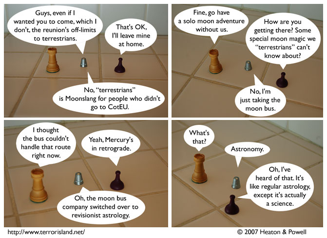

Strip #114
— Monday, March 4, 2007
Sid and Stephen have been following York around for like a whole day asking to come with
Notes, Thoughts, &c.
Ben’s Notes
If you have friends who are astronomers, you should try calling them astrologers sometime. It provides hours of fun, probably.
Lewis’s Notes
It took me a while to come up with the word “terrestrians” because I just kept thinking of words that already existed or sounded too much like, “terrorists.” Also, I hope you are all excited at the prospect of a solo moon adventure for York, I know I would be.
Also, to add on to Ben’s suggestion, when they get angry with you for calling them astrologers, make sure to remind them that haruspicy is a better form of divination anyway. That will double the fun.